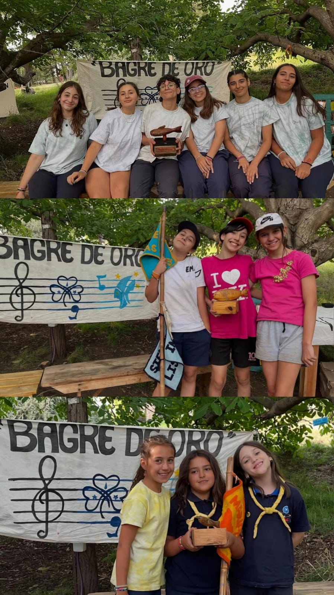
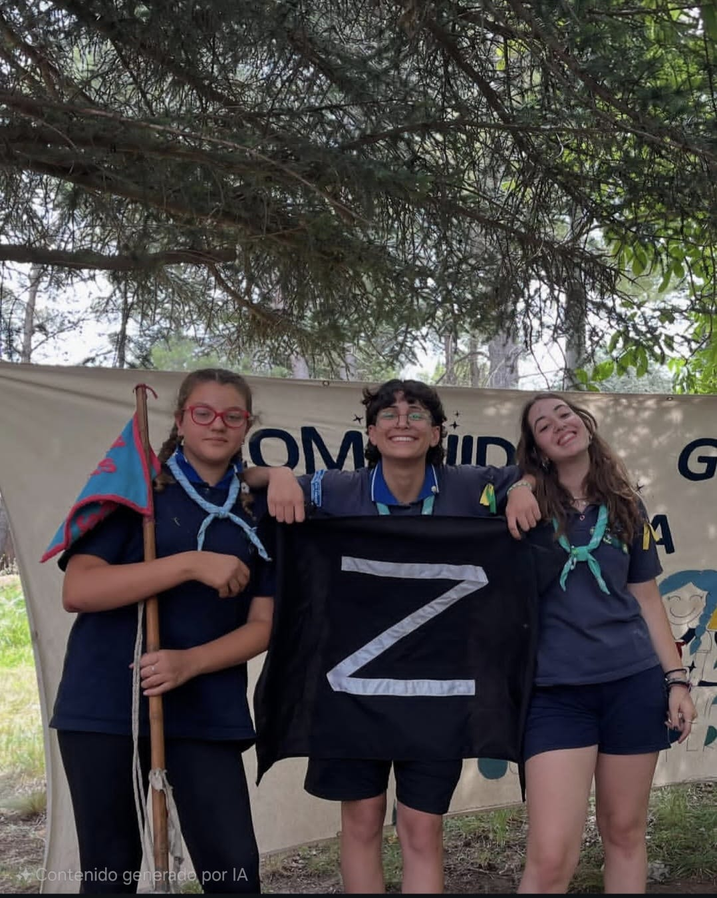

Tradiciones Comunitarias
El Bagre de Oro
Es una tradición que se hace en los campamentos, donde las guías crean canciones y competiten por premios, como si fuera un festival de música.
Las alitas compiten por seisenas por la mojarrita. La Caravana compite por patrullas por la corvina. El Solar y el Caln compiten por el Bagre de Oro.
La Parrilla Guía

Es una competencia en la cual se les da a las ramas deberan cocinar un menú específico en un tiempo acotado. Al finalizar el tiempo el jurado, que pueden ser los papás de cocina o invitados, decidirán qué rama ganará el premio.
El Zorro
Una actividad que se realiza en los campamentos de verano, donde tres guías o más realizan travesuras llamadas misiones procurando no ser vistas. Al final del campamento se hace el juicio en donde las guías que sospechan de otras pueden arriesgarse a ganar el honor de haber descubierto al zorro o una prenda por confundirse.